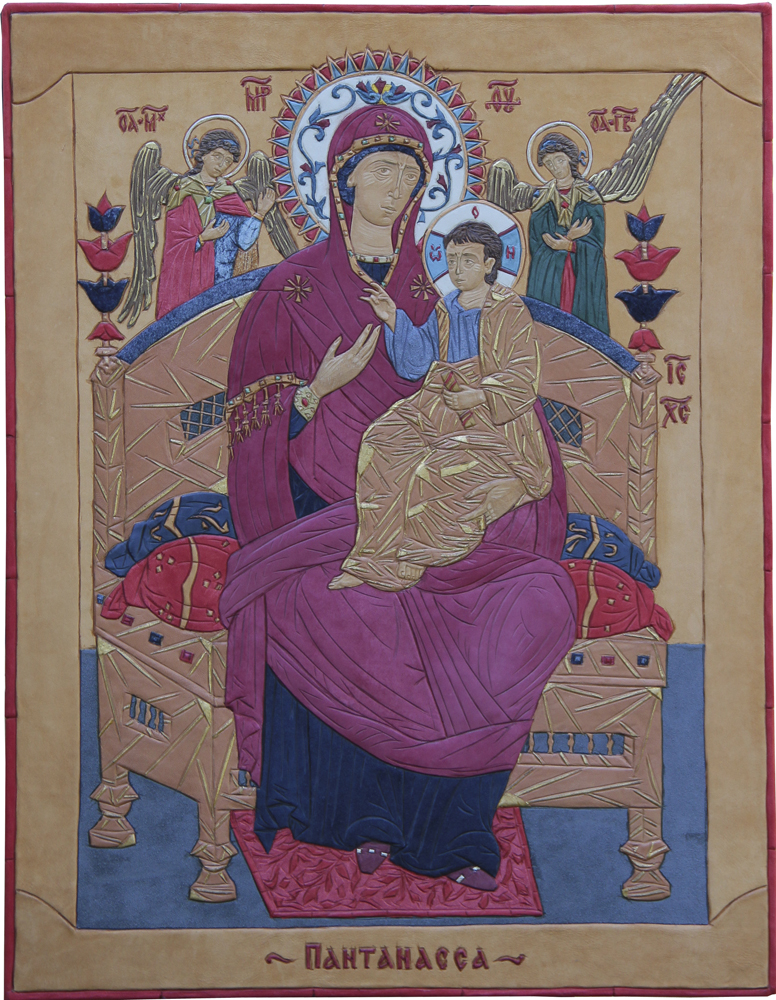

Икона Божией Матери Пантанасса.
Кожа, сусальное золото.
69 x 54 см.
Mother of God Icon Pantanassa.
Leather, tinsel, gold leaf.
69 x 54 cm.
Ікона Божої Матері Пантанасса.
Шкіра, сусальне золото.
69 x 54 см.